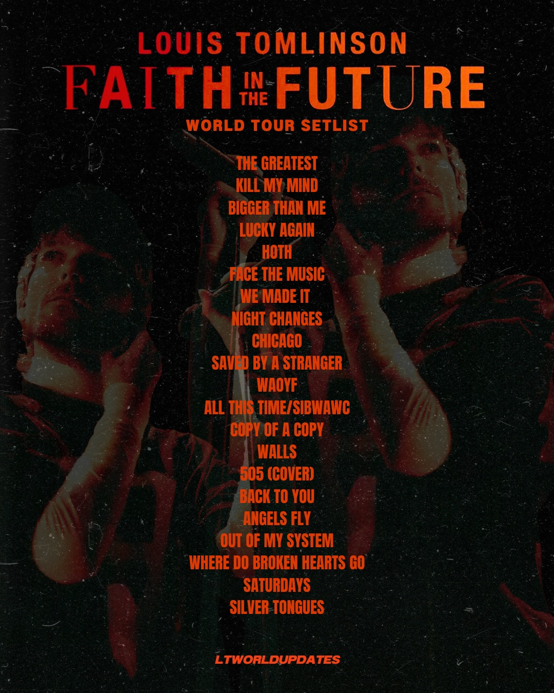
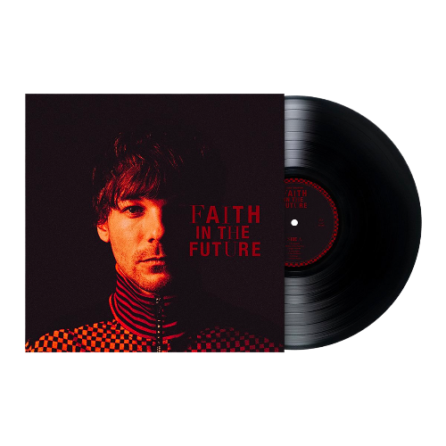

Louis Tomlinson
Louis Tomlinson the ex singer of the world famous boy band One Direction, the young man from Doncaster didn't sit still after the break up of the band. With his second album Faith In The Future he tours all around the world selling out arena's all over the globe.
 listen to Faith In The Future on Spotify!
The setlist of Faith In The Future excistst of 21 songs in total, wich include cover songs and some old clasic One direction songs.
Faith In The Future World Tour, Amsterdam Ziggo Dome 2023.
My rating of the Amsterdam FITF concert is a solid 8/10. The concert itself was amazing, Louis himself was very energetic with the crowd and his singing was amazing. However to be at least a bit close to the stage i had to wait 12 hours in line to be number 426 because a lot of people camped for the concert which was a bit of a bummer. But the vibes of the concert itself was an amazing expierence!
Faith In The Future World Tour, Amsterdam Ziggo Dome 2023. Fan project.
For this concert there was a fanproject during the song 'Angels Fly' where fans were handing out paper stars to put over their flashlights during the show to make a yellow light. Every show has a different fanproject which i find super cute.
About the venue
The venue where Faith in The Future took place was Ziggo Dome (De passage 100,1101 AX Amsterdam) in Amsterdam, this venue excists of a standing pit with a capacity of 6300 people and two rings of seating tickets which can hold up to 10.700 people in total. You can get to the venue by train (Bijlmer Arena) then it's a short 5 minute walk to the venue itself. There is also a parking space by the arena for which you need to buy an extra parking ticket besides your concert ticket.